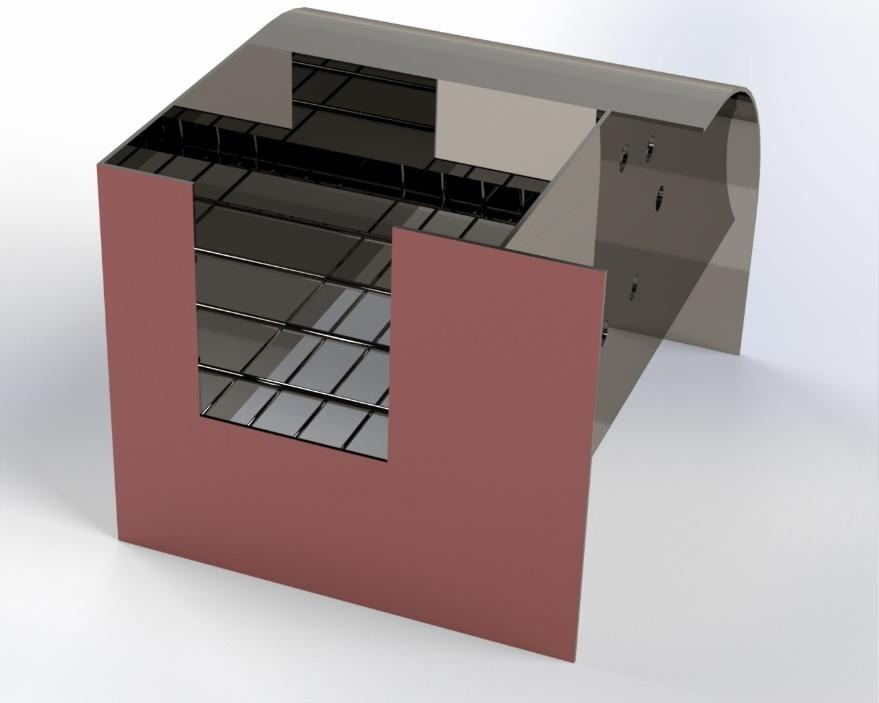
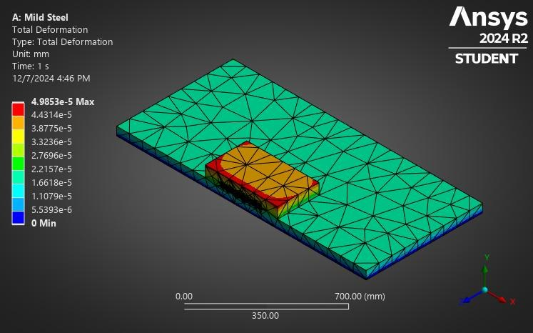

Semi-Automated Shoe Cleaning Machine
A full product-design study — from market survey through QFD, material selection, Ansys structural validation, to cost and break-even analysis — for course IPE 318 (Product Design-II Sessional).

Overview
A comprehensive product-design project developing a semi-automated shoe cleaning and polishing machine for the Bangladeshi market, combining traditional cleaning methods with semi-automated mechanisms. The design process began with a market survey to establish customer requirements, translated into engineering specifications through a Quality Function Deployment (QFD) House of Quality. Material, manufacturing process, and joining method were each selected through qualitative screening followed by a weighted-average quantitative analysis. The final design was structurally validated in Ansys — equivalent (von Mises) stress, total deformation, fatigue life, and safety factor were analyzed for the base, frame, shaft, and worm-gear connector. The project closes with a cost, break-even, and sensitivity analysis of the final design.
Project stages
- Concept generation and proposal selection
- Customer needs survey
- Quality Function Deployment (House of Quality)
- Functional decomposition
- Design analysis & Ansys structural validation (base, frame, shaft, worm-gear connector)
- Material, manufacturing, and joining process selection
- Quantitative material selection (weighted average method)
- Cost, break-even, and sensitivity analysis

Team
Md. Muqtadir Fuad, Abdullah Al Mazid, Md. Ashiqur Rahman Noor, Md Sadiqul Haque, Ananya Halder, and Yashna Noor — supervised by Dr. Kais Bin Zaman, Zahin Ar Rafi, and Abu Taher, Department of IPE, BUET. Course: IPE 318 (Product Design-II Sessional).